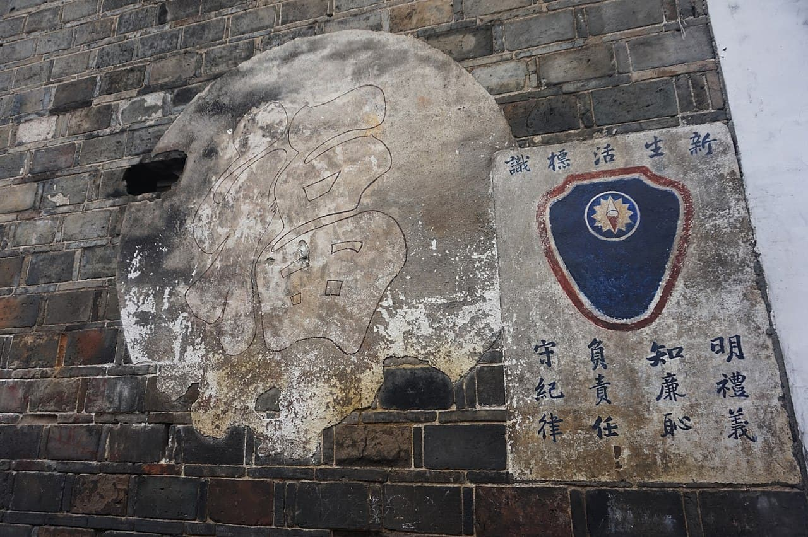

五省橫遭赤禍，匪區民眾多受煽惑，更有所謂列寧小學，一縣多至數百所，以為麻醉青年之利器。此種思想之流毒，實較有形匪患為尤甚。甚或因禍害切膚，思奮起自救者，亦苦無教育上有力之指導。現經收復，不得不有管、教、養、衛施之特種教育，予以感化的、公民的、職業的、自衛的訓練，以正確其思想，健全其人格，發展其生計，扶植其生存。
宣傳三民主義，揭破赤匪之錯誤與罪惡；並針對民眾之思想言論，為深切之指導，教以禮、義、廉、恥與忠孝、仁愛、信義、和平等美德，表揚歷史上為民族生存，為國家犧牲的偉大事跡，解說國家現在所處之地位與國際環境，授以普通文、應用文、歌曲等，註意閱讀及思想發表之訓練，並公民生活之常識。
這個基本要義和下手的地方是什麼呢？第一、我們要講「教」的基本要義，首先應當注重的東西就是「禮義廉恥」。我們要達到「教」的目的，要真能建設國家復興民族，絕不只在講堂裏一點書本子上的知識，使受教的人知道看書、寫字，懂得算學、物理、化學、政治、經濟諸般科學，也不只在操場練一點普通的技術，如瞄準、射擊、騎馬、跳跑等項；因為這些東西不過是普通的學術技能，單是教會這些科目，決不足以建設國家復興民族，這種教育，不能算是真正完善的教育，真正完善的教育，一定要除這些科目以外，並且在教授一切科目之先，能將受教者教成一「人」！懂得做人的道理——禮義廉恥！人之所以異於禽獸而為萬物之靈，就是因為人懂得做人的道理，曉得「禮義廉恥」！若單講其他學術技能，動物和人還不是一樣？而且有時專就某一技藝來講，每每動物還要勝過人！所以我們要達到教的目的，一定要先教做人的道理——禮義廉恥，使受教者完成人格。如此的教育才是「人格」教育，人格教育，才是真正完善的教育，真的教育才可以使受教的人，明禮義，知廉恥，負責任，守紀律，能擔當建設國家復興民族的重任！如果教育不自做人的道理——禮義廉恥——做起，受教者雖有學術技能，不但不能救國，有時誤用聰明，反而增加其作惡的能力。他們在人家重重壓迫之下的民族，武力不易生效，即有武力亦不能自由運用；所以復興國家民族，只有教育，只有禮義廉恥，纔是復興的唯一工具！
我們有此工具，必可復興；失此工具，勢必滅亡！所以古人說：「禮義廉恥，國之四維，四維不張，國乃滅亡！」我們也可以調轉來做正面的肯定：「四維既張，國乃復興」。我們現在國家貧弱和民族衰敗，其根本原因，並不在乎武器不精，而完全是由於喪失了固有的精神和優美的德性——禮義廉恥！現在我們要救國建國，要復興民族，並不是難事，只要我們各人能恢復各人固有的良知，實踐禮義廉恥，救亡復興必然易如反掌！我們在江西辦事的一般同志，既負有非常重大的責任，以後務必以禮義廉恥自勉而身體力行。同時，拿禮義廉恥來勉勵一般親友、學生，或部下，以及一般國民，以造成新的革命風氣。如果再要做違禮背義寡廉鮮恥的事情，那就不僅不配做擔負復興民族大任的革命幹部，而且根本不配做一個人，同時我們的民族也要被人家視為劣等的野蠻民族，看作比狗還不如！所以我們要達復興民族的目的，一定要從禮義廉恥這個根本急務做起！無論是在學校裏、黨部裏、軍隊裏，或政府機關裏辦事的人，統統要注重這一點，尤其是警察要做民眾的模範，社會的教師，格外要能隨時隨地拿禮義廉恥來教導一般國民。假使發覺某個人有違反禮義廉恥的行動態度，立刻就要干涉他處罰他，一方面是改善個人，一方面免他流毒社會。現在社會如此紛亂，人民如此不進步，原因固然很多，而警察不得力的關係也非常之大。這一點是希望我們在警察機關工作的各位同志要特別想法予改進的。
決議文重點原則如下： 「第一，一國之軍隊，必須統一編制，統一號令，方能收指臂之效，斷無一國家可許主義絕不相容之軍隊同時並存者，故須徹底取消其所謂「紅軍」，以及其他假借名義之武力。
第二，政權統一，為國家統一之必要條件。世界任何國家斷不許一國之內，有兩種政權之存在者，故須徹底取消所謂「蘇維埃政府」及其他一切破壞統一之組織。
第三，赤化宣傳與以救國救民為職志之三民主義絕對不能相容，即與吾國人民生命與社會生活亦極端相背，故須根本停止其赤化宣傳。
第四，階級鬥爭以一階級之利益為本位，其方法將整個社會分成種種對立之階級，而使之相殺相讎，故必出於奪取民眾與武裝暴動之手段，而社會因以不寧，民居為之蕩析，故須根本停止其階級鬥爭。」